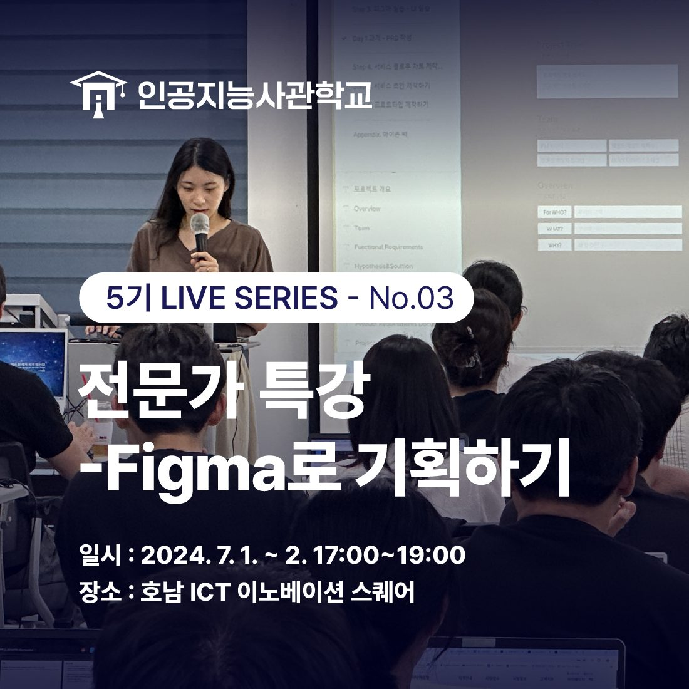
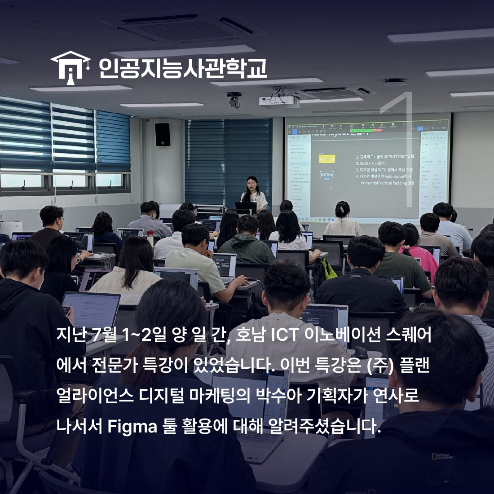
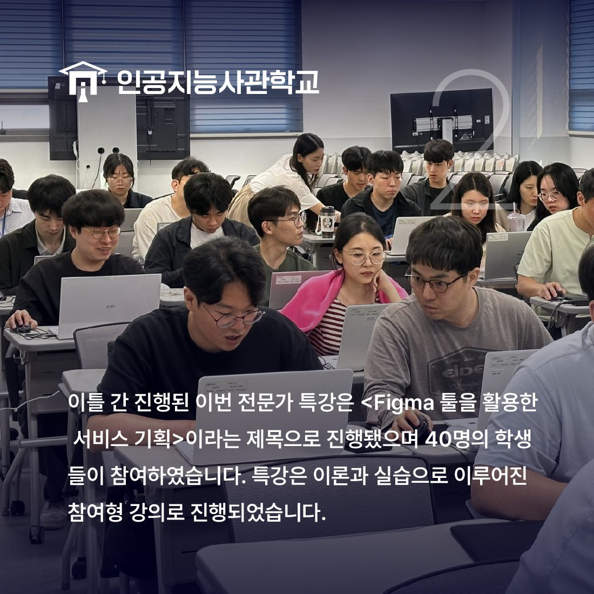
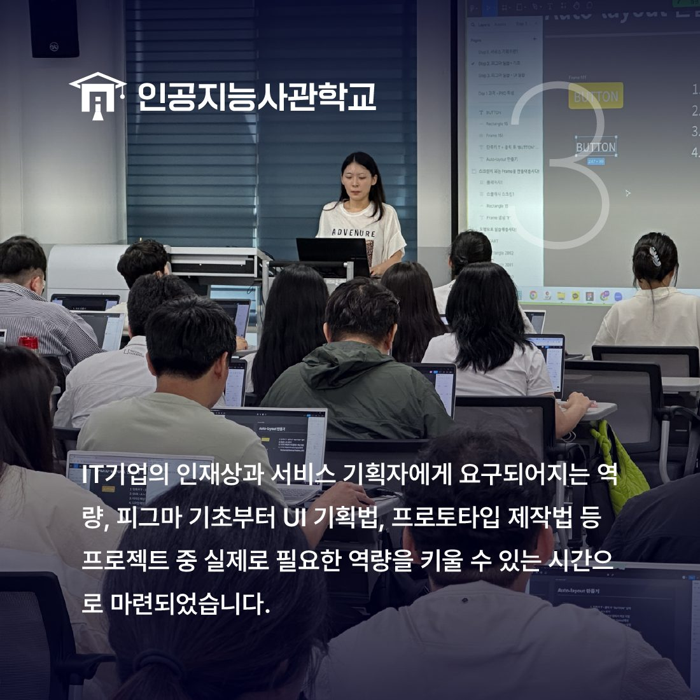
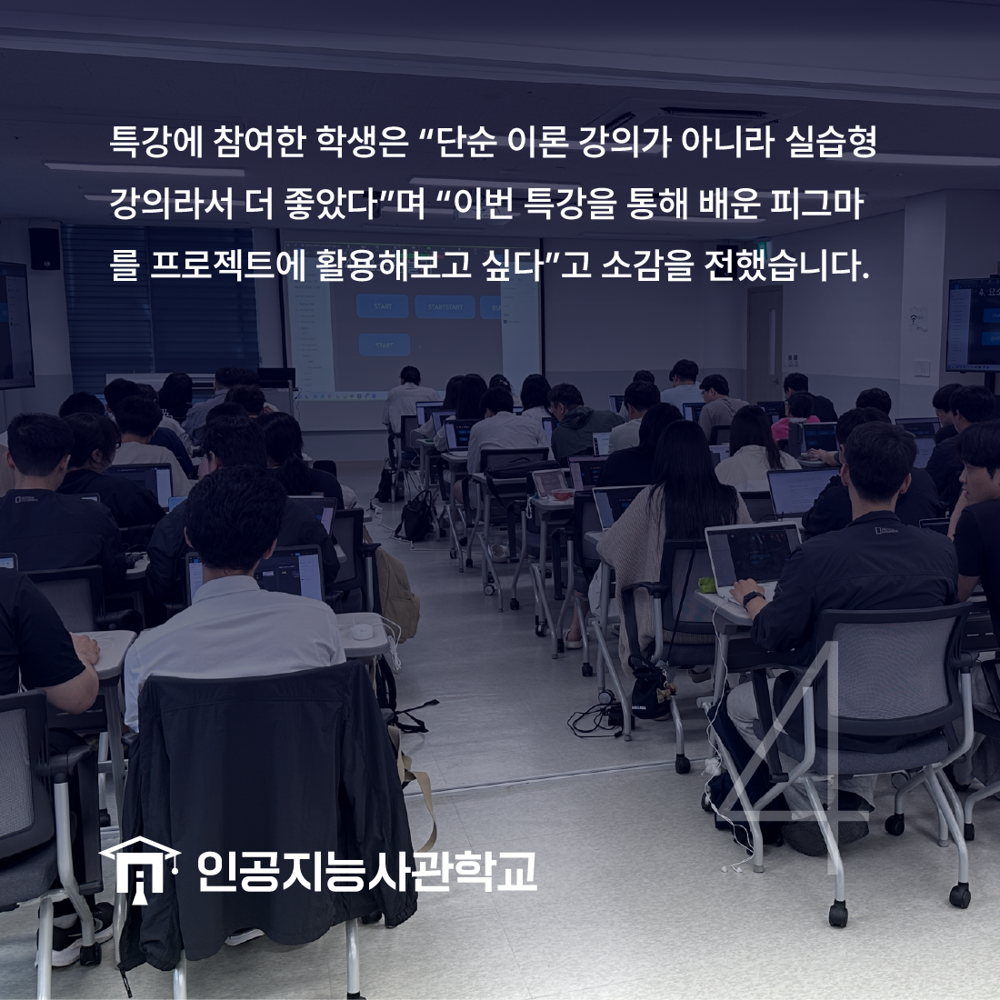

안녕하세요! 인공지능사관학교입니다. 😆

지난 7월 1일 ~ 2일 양 일 간,
호남 ICT 이노베이션 스퀘어 3층에서
Figma 툴 실습 특강이 진행됐습니다🙌

(주)플랜얼라이언스 디지털 마케팅의 박수아 기획자 님이
연사로 나서 <Figma 툴을 활용한 서비스 기획>이라는 제목으로
실습형 강의를 준비해 주셨습니다!

이번 전문가 특강에는 40명의 학생들이 참여하여
Figma 기초부터 프로토타입 제작법 등
다양하게 공부했습니다.

실습 뿐만 아니라 IT 기업의 인재상과
서비스 기획자에게 요구되어지는 역량 등도
함께 공부할 수 있는 좋은 시간이었습니다💗

특강에 참여한 교육생은 "단순 이론 강의가 아닌
참여형 실습 강의라 더욱 좋았다"며
"프로젝트 기획 시 활용해보고 싶다"고 소감을 남겼습니다.